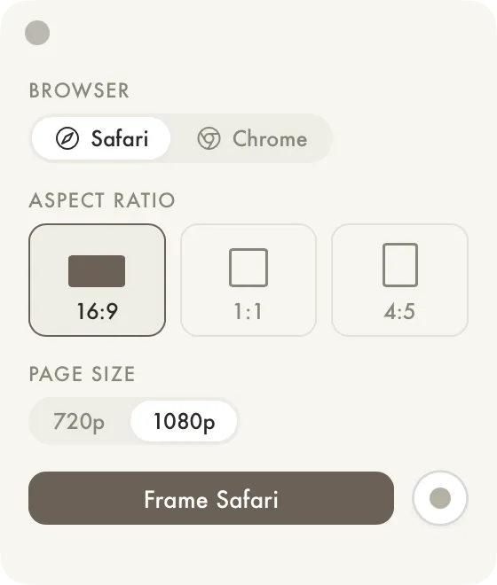

Browser Recorder
V.0.2
I found I needed to screen cap my website, and it's usually annoying to get the window size right. And the bottom gets cut off due to the rounded corners!
So I made this tool. It works oddly well. It resizes the browser, pops open the dev tools at the bottom to get rid of the rounded corners, and captures with the record tool. The videos go right into the active project media panel.